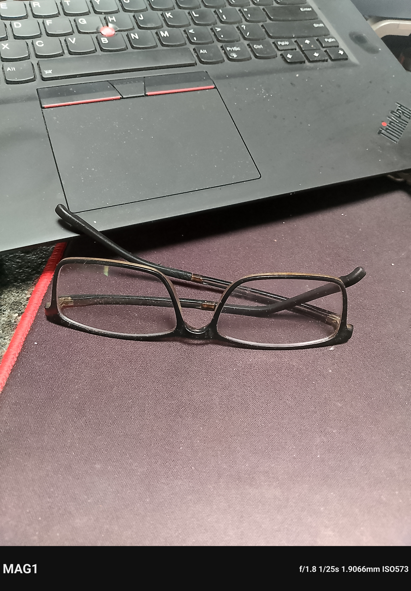

Camera and tools / camera
Camera, photos, videos and modes
Inventory modes and parameters from the current camera UI. Hardware HAL data or marketing claims do not substitute for available controls.
This chapter uses MAG1WW60-1 evidence only. Reference steps are separate from the actions actually recorded.
App list → Camera (com.android.camera2)
Before you start
- A non-private test scene and sufficient storage
- MAG1WW60-1 Camera 1.0000.19
- Prepare a non-personal scene and check the gallery thumbnail before recording; do not open personal photos
MAG1WW60-1 capture check · 16 October 2026
Reference steps · see recorded scope below
- Prepare a non-private test scene before opening the camera. Choose a scene without private information.
- Inventory the actual controls for photo, video, front/rear switching, zoom, flash, timer, grid, aspect ratio, resolution and storage location.
- In video mode, verify available combinations of resolution, frame rate, HDR and stabilization, then record a test clip and inspect its file properties.
- Record front and rear camera options separately. Rear-camera specifications do not describe selfie features.
- After taking a test photo, check sharpness, orientation and storage path using the non-private test file.
- Do not add slow-motion or OIS instructions when absent from the menu. The official site currently does not list slow motion and states that OIS is unsupported.
Buttons and options
| Button / option | Purpose and limits |
|---|---|
| Photo / video | Available modes do not mean every maximum setting can be used simultaneously |
| HDR / EIS | Verify combinations through the UI and output clips |
| Gallery thumbnail | May expose personal photos; excluded from this capture session |
MAG1WW60-1 observed scope
Rear Capture and Ultra res photographs, native Frame watermark, 4K mode selection and a separate 3840 × 2160 HEVC clip (8.296 s, average 30.13 fps). No cross-firmware image-quality or sustained recording claim.
Cancel, exit and restore
Stop capture and go back. Before deleting output, confirm that it consists only of test files.
Troubleshooting
- Camera will not open: check permissions and other apps using it
- Capture stops: check storage, temperature and version
- Setting missing: record the actual mode; do not automatically classify it as a hardware fault
Limits and versions
The official site lists rear video up to 4K30, front video up to FHD30, HDR and EIS. The dated sample below confirms a rear 4K capture; front FHD30 and HDR/EIS combinations were not retested in this batch.
See the recorded scope and limitations on this page.
MAG1WW60-1 development software. Evidence covers only the dated captures and explicitly described tests.
4K video, Ultra res photos and native watermark
Captured on MAG1WW60-1 on 16 October 2026. These are camera output files, separate from the 720 × 1592 screen recordings used to show controls. Photos retain the camera-generated black Frame watermark. No website watermark or image enhancement has been added.
| Mode | Before Frame | Published file / result |
|---|---|---|
| Capture | 3072 × 4080 · 12.53MP | 3072 × 4416 · includes black frame |
| More → Ultra res | 6144 × 8064 · 49.55MP | 6144 × 8432 · includes black frame |
| Video → UHD 4K, 30fps | 3840 × 2160 · HEVC | 250 frames / 8.296 s ≈ 30.13 fps average; silent |
The frame increases canvas size, not captured scene detail: the framed Ultra res file is not evidence of a 52MP sensor. 50MP is a nominal mode label. Frame rate is measured in fps; the measured average is not a constant-rate guarantee. The published original was recorded without simultaneous screen recording. Portrait playback uses the file rotation metadata.


Download original JPEG

Download original JPEG
Download original 4K HEVC
50MP and 12.5MP: what changes?
Samsung describes the JN1 as a 50MP sensor. Its Tetrapixel design groups four neighboring same-color pixels for a roughly 12.5MP image. High-resolution capture uses remosaic processing. The relationship is approximately 50 ÷ 4 = 12.5; it does not mean four 12.5MP photographs are simply stitched together, or that a finished 12.5MP JPEG is merely enlarged. Samsung ISOCELL JN1.
The existing device evidence identifies s5kjn1. The new capture proves a selectable Ultra res mode and its output dimensions; it does not trace every proprietary ISP stage or prove four times the resolved detail. Bright, steady scenes are better candidates for high-resolution detail; a controlled image-quality comparison remains separate.
Camera controls and watermark behavior
- Video → Settings → Video size(Back camera) → UHD 4K, 30fps; return and use the red shutter to start/stop.
- More → Ultra res → Shutter; this is the high-resolution photo mode.
- Capture → Settings → Picture Watermark → CUSTOMIZED → enable Frame watermark → Background: Black.
- UNIVERSAL → Customize watermark provides custom text such as MAGNE.AI. On this build, enabling Frame changed that setting to No; the black frame displays MAG1 plus exposure data.
- No video-watermark control was found in the tested Video settings. The 4K sample has no native watermark.
MAG1WW60-1 screenshots and recordings · 16 October 2026
These captures confirm only the visible screens and actions shown on this development build. They do not verify every setting, external accessory or end-to-end feature. Android touch markers show ADB-injected input; the native coordinate strip is retained. No app icons are masked.

MAG1WW60-1 · 2026-10-16 · Original English screenshot
Photo settings navigation; no preferences changed; silent
MAG1WW60-1 · 2026-10-16 · Photo settings navigation; no preferences changed; silent

MAG1WW60-1 · 2026-10-16 · Original English screenshot
Rear-camera shutter demonstration on an ordinary object; no gallery opened; silent
MAG1WW60-1 · 2026-10-16 · Rear-camera shutter demonstration on an ordinary object; no gallery opened; silent

MAG1WW60-1 · 2026-10-16 · Original English screenshot
Rear-camera recording started and stopped on an ordinary object; tutorial has no audio; gallery not opened
MAG1WW60-1 · 2026-10-16 · Rear-camera recording started and stopped on an ordinary object; tutorial has no audio; gallery not opened

MAG1WW60-1 · 2026-10-16 · Original English screenshot
Select rear-camera UHD 4K, 30fps; output-file verification is listed separately; silent
MAG1WW60-1 · 2026-10-16 · Select rear-camera UHD 4K, 30fps; output-file verification is listed separately; silent

MAG1WW60-1 · 2026-10-16 · Original English screenshot
4K camera operation screen recording; this tutorial is 720×1592, separate from the original 4K camera output; silent
MAG1WW60-1 · 2026-10-16 · 4K camera operation screen recording; this tutorial is 720×1592, separate from the original 4K camera output; silent

MAG1WW60-1 · 2026-10-16 · Original English screenshot
Ultra res shutter demonstration with native watermark enabled; output-file properties listed separately; silent
MAG1WW60-1 · 2026-10-16 · Ultra res shutter demonstration with native watermark enabled; output-file properties listed separately; silent

MAG1WW60-1 · 2026-10-16 · Original English screenshot
Capture shutter demonstration with native watermark enabled; output-file properties listed separately; silent
MAG1WW60-1 · 2026-10-16 · Capture shutter demonstration with native watermark enabled; output-file properties listed separately; silent

MAG1WW60-1 · 2026-10-16 · Original English screenshot
Native Frame watermark enabled with Black background; existing preference retained; photograph output checked separately; silent
MAG1WW60-1 · 2026-10-16 · Native Frame watermark enabled with Black background; existing preference retained; photograph output checked separately; silent
Current capture status
See the dated MAG1WW60-1 screenshots and recordings above.
16 October supplement · MAG1WW60-1 development software
- MAG1WW60-1, camera 1.0000.19: the recorded test saved one 4080 × 3072 JPEG and a 31.89 s, 1920 × 1080 H.264 video at about 30 fps. Complete file decoding and device/computer hashes passed. Front/rear previews switched successfully; no front photo was saved.
- A later 16 October capture confirmed More → Ultra res and a 6144 × 8064 image (49.55MP) before adding the Frame watermark. The earlier 12.53MP sample alone did not establish this mode. Front-camera driver naming and public output dimensions likewise describe different layers.
- A camera-app freezer/Binder exit occurred before the successful capture. It is a recorded issue for investigation, not proof that a sensor or AI algorithm failed. Long recordings, 4K/HDR/EIS combinations, night/portrait/macro and image-quality improvement remain untested here.
Evidence sources: functional · camera-ai
MAG1WW60-1 camera visual AI and image processing
MAG1WW60-1 has camera-specific visual-AI components. Current static evidence identifies scene-recognition control/result paths, AI single/multi-frame denoising libraries and JN1 configuration, plus depth, segmentation, beauty and focus-related components. Their presence and configuration do not prove activation in each photo or 4K frame.
Conceptual photo path: sensor capture → RAW data → ISP image processing and exposure/white-balance/focus control → mode-dependent denoising, HDR or visual AI → image encoding. Branches and processing order depend on the mode; this is not a recovered proprietary pipeline.
Video continuously captures frames, processes them and encodes the selected output. The published MAG1WW60-1 4K sample confirms resolution and file output, not simultaneous HDR, stabilization and NPU acceleration. Current video-AI trigger conditions remain unverified.